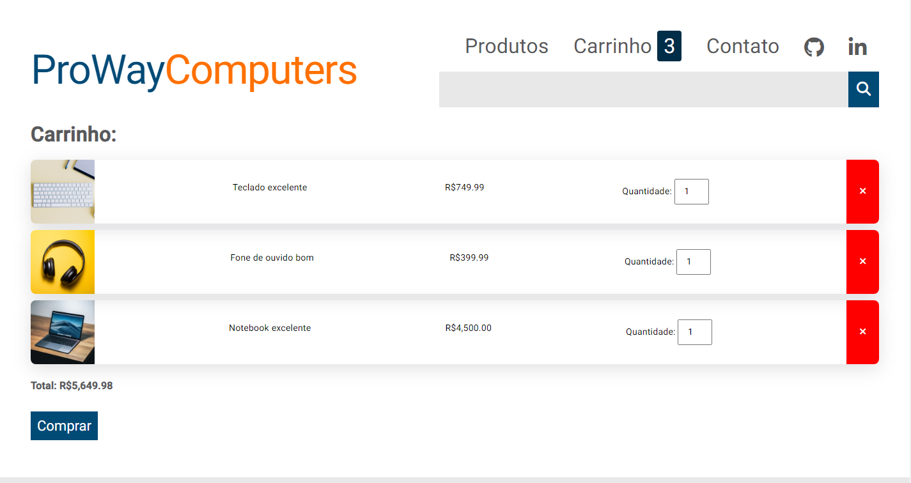
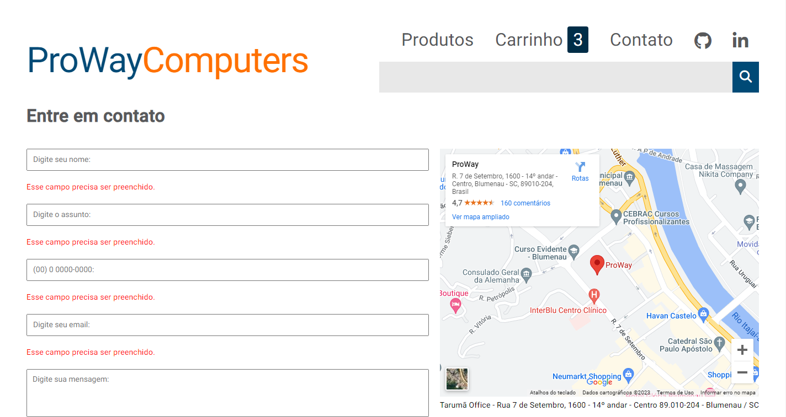

<Descrição/>
Website construído para simular um e-commerce de aparelhos tecnológicos, desenvolvido durante o minicurso de Angular da ProWay, onde o principal objetivo foi aplicar os conceitos técnicos do framework JavaScript. O site possui toda a lógica para listar produtos, adicionar ao carrinho, remover e validação de formulário para contato.
<Tecnologias/>
<Screenshots/>
Home
Página inicial do web site com a listagem dos produtos disponíveis.
Carrinho
Seção responsável por armazenar os produtos adicionados ao carrinho pelo usuário.
Contato
Área com formulário para entrar em contato direto com a empresa.
